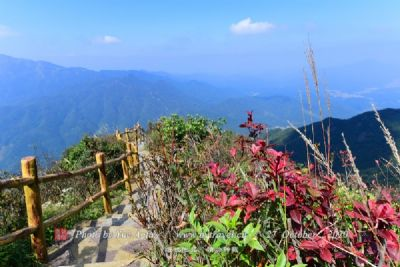

綦江
长江上游南岸支流。发源于乌蒙山西北麓贵州省遵义市
北大娄山系，流经重庆市綦江区，于江津区仁沱镇顺江村汇入
长江。
据明代曹学佺《蜀中名胜记》载:"江发源夜郎，作苍帛色，
名綦。"因流经夜郎境曾称夜郎溪。南齐时称棘溪，元代又称
南江。流域处于贵州省北部和重庆市西南部，位于东经106°19'~107°15'、北纬28°11'~29°18'，地跨贵州省桐梓县、习水
县和重庆市綦江区、江津区、南川区、巴南区等6个区县。
2020年6月22日，重庆市水文监测总站发布洪水红色预警，
受降 雨影响，预计綦江流域重庆段未来8小时内将出现洪水，
重庆江津区綦江五岔站最高水位将超过保证水位(200.51米)5.7
至6.3米左右，涨幅约10至11米 。 |
|  |
黑山谷（BlackValley），国家AAAAA级旅游景区，国家级森林公园，国家级地质公园，中国最佳休闲名山，中国最佳绿色低碳旅游休闲胜地，亚洲大中华区最具魅力风景名胜区，重庆市“巴渝新十二景”，重庆市首家环保示范景区。黑山谷地理坐标为东经106°5826，北纬28°5146，地处云贵高原向四川盆地过渡的大娄山余脉，位于重庆市万盛经济技术开发区黑山镇境内，距重庆城区63公里，景区面积100平方公里，山顶与谷底高差最大1200米 |
 |
重庆市万盛石林风景区位于重庆市南部的万盛区，距重庆市区89公里(全高速)，景区总面积10余平方公里，其成岩年代距今约4.6亿年，比云南路南石林成岩期早２亿年，是中国最古老的石林。其主要景观有芦花湖、情侣石、万成奔腾、莲花争妍、香炉胜景、千塔雄矗、化石长廊、水上石林、天下第一石扇、地缝一线天等。还有多姿多彩、秀丽壮观的天门溶洞与地表石林交相辉映。浓郁、纯朴的苗家风情及婀娜多姿的民族歌舞使石林更添情趣。经过多年系统的开发建设，万盛石林全面实现了自然景观和人文景观的高度统一，显示出巨大的综合旅游观光价值和科考价值，连续两届被评为“重庆十佳旅游景区”。漫步石林，可以在许多石头上发现一个个形似虾类、通体呈黄褐色的彩色化石——珠角石 |
|
重庆綦江木瓜海棠园坐落于三角镇桐桠村，距离綦万高速公路通惠出口8公里，紧邻綦江国家地质公园红岩坪景区。景区规划面积1600亩，总体空间布局结构为“一核一带二区”，是重庆市木瓜产业的种植示范区。于2015年3月10日，成功创建为国家AAA级旅游景区。园内木瓜海棠品种繁多，现种植有23个药用木瓜品种和22个观赏海棠品种 |
|